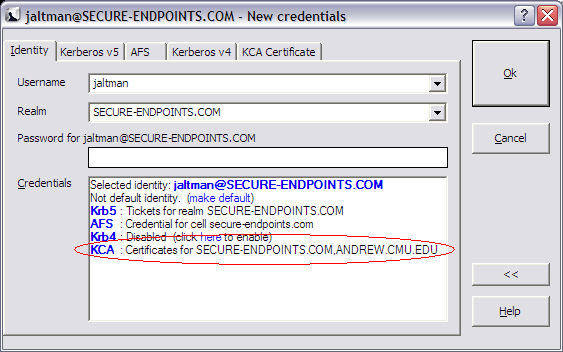
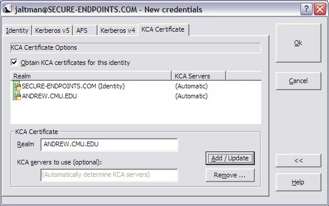

The process of obtaining a new Kerberized Certificate Authority (KCA) certificate is integrated with the new credentials acquisition of Network Identity Manager. When the KCA provider is installed, options for obtaining KCA certificates will appear in the advanced view of the New Credentials dialog as pictured below:

Figure 1: New Credentials dialog (advanced view) in Network Identity Manager with the Kerberized Certificate Authority provider installed
Clicking on the KCA link in the Credentials browser or clicking the KCA Certificate tab will switch to the KCA options panel shown below:

Figure 2: New Credentials dialog (advanced view) showing the KCA Certificates options panel
For The Kerberized Certificate Authority provider can obtain kerberized certificates from multiple Kerberos realms for a single network identity.
The Obtain KCA certificates for this identity checkbox is used to determine if KCA Certificates will be obtained for the current identity.
A table view of the configured Kerberos Realms is provided. For each realm, either a list of KCA servers is provided or the word "(Automatic)". "(Automatic)" is used to indicate that the KCA provider will obtain the list of KCA servers for the realm by querying the Domain Name System.
To add a new KCA Certificate to the for this identity. Enter the Kerberos Realm name in the Realm text field and (optionally) provide a list of KCA servers to be used for the specified Kerberos realm. If no server list is specified, the KCA provider will determine the KCA server list automatically by querying the Domain Name System. (DNS SRV record locators are used.) When specifying a KCA server list, enter each server name separated by spaces. For example, if the list of KCA servers is kca1.example.com, kca2.example.com and kca3.example.com, then you would enter:
host1.example.com host2.example.com host3.example.com
in the KCA servers to use text field.
To complete the process of adding the KCA Certificate, press the Add/Update button.
Select the Kerberos realm in the table, edit the KCA server list, and press the Add/Update button.
Select the Kerberos realm in the table and press the Remove button.